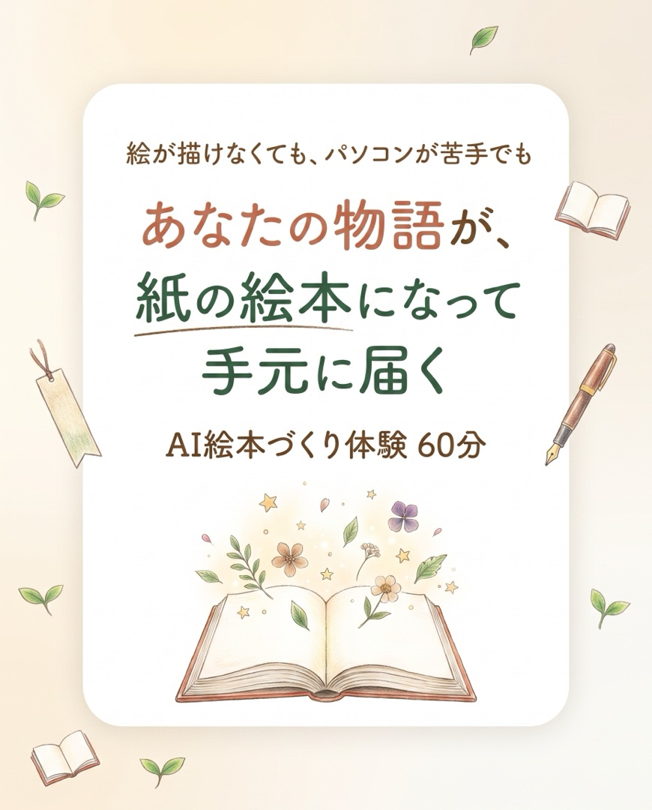
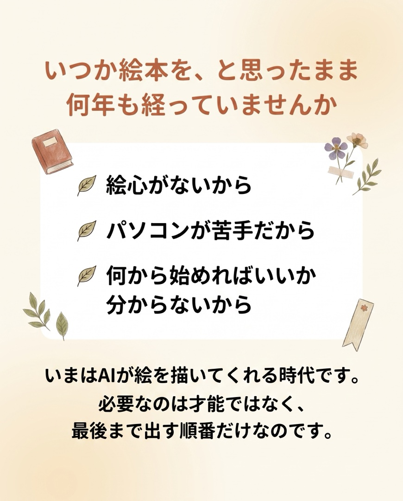
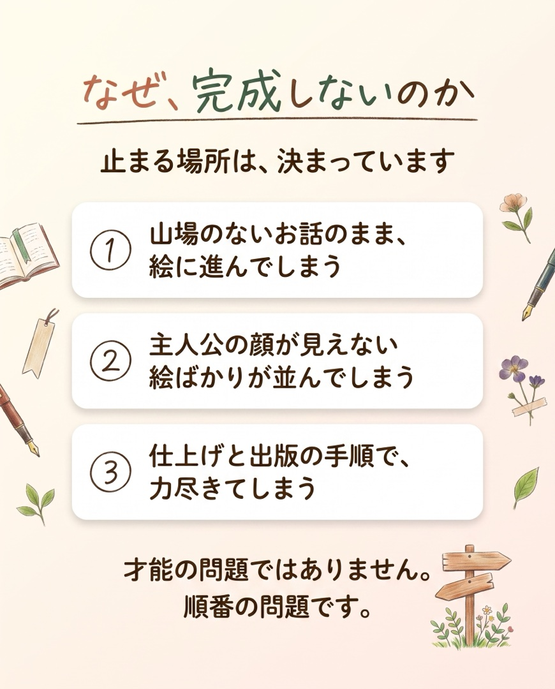
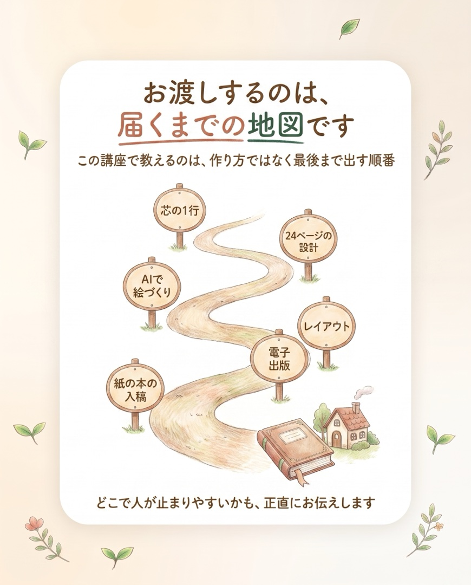
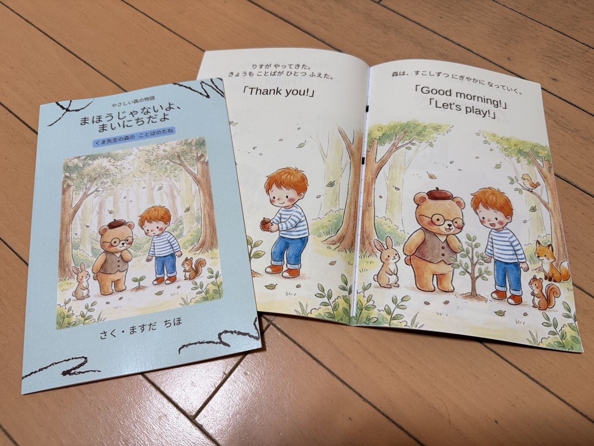
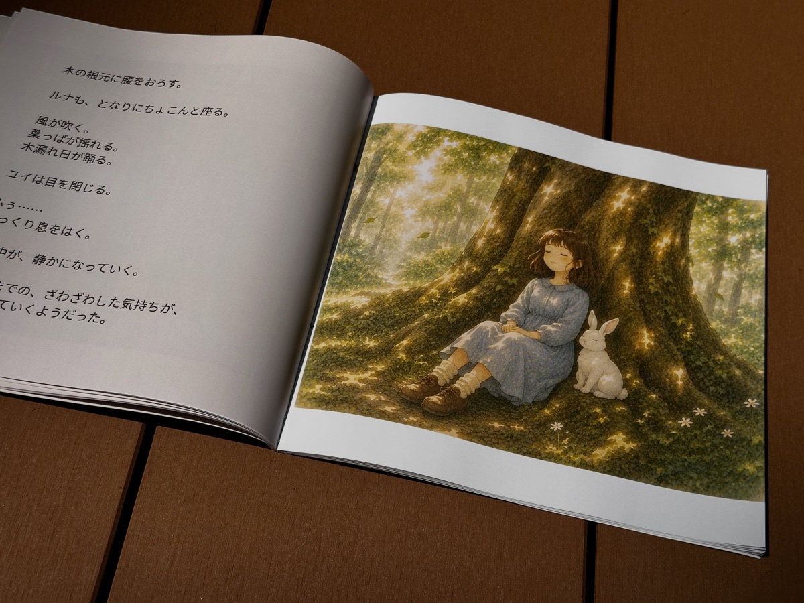
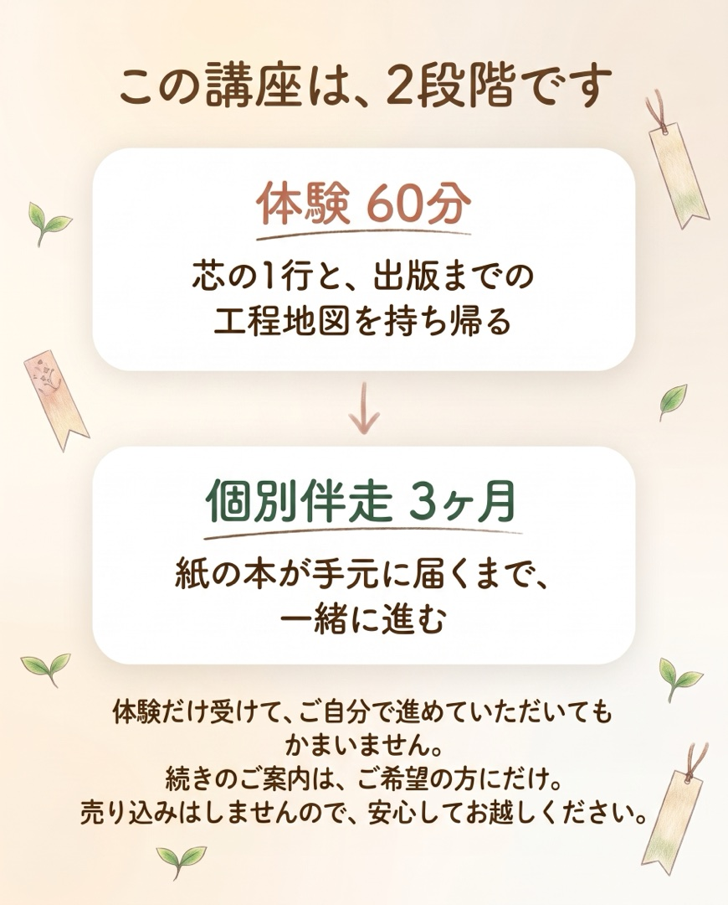
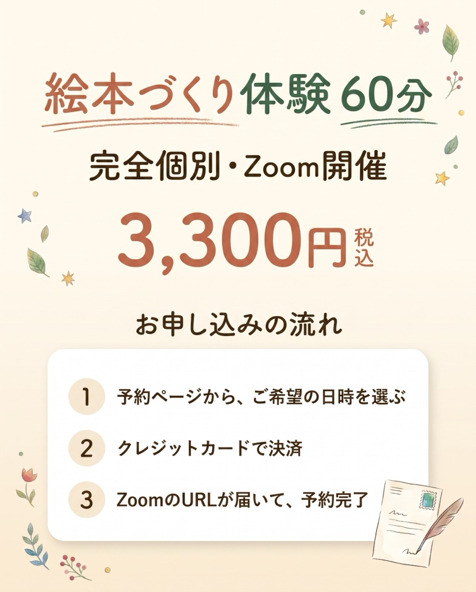
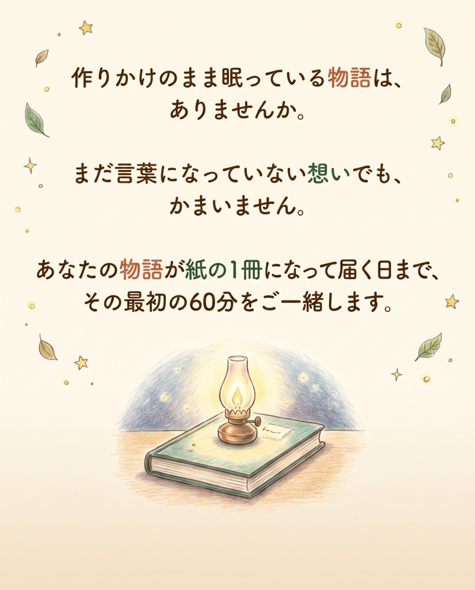

私は自分の絵本『まほうじゃないよ、まいにちだよ』を、原稿から出版まで自分の手で完成させ、紙の本にして届けました。
その道のりでつまずいた場所は、すべて手順書にしてあります。

そして先日、伴走させていただいたみちこさんの絵本も、ペーパーバックになって手元に届きました。

絵本づくりは、特別な人のものではありません。
正しい順番で進めば、あなたの物語も紙の1冊になります。

完全個別のマンツーマン（Zoom）です。
終わったとき「何をどの順番で、どんな道具でやれば届くか分かった」になっていることがゴールです。
わたし自身、最初の1冊を出すまでに同じ壁を全部通りました。
何から始めればいいか分からない。作りかけで止まる。手順を調べるだけで日が暮れる。
その道のりをぜんぶ手順書にして、自分の絵本『まほうじゃないよ、まいにちだよ』を紙の本にして出版しました。
教えるのは作り方ではなく「最後まで出す順番」です。
急がせません。答えも渡しません。でも、止まらせません。

